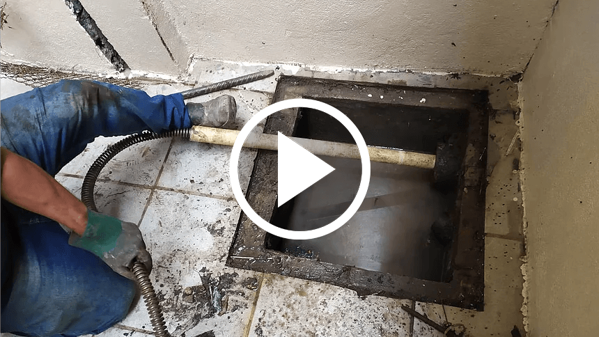

Desentupimento de Esgoto
Removemos entupimentos com rapidez e segurança, evitando mau cheiro e refluxos.
A Desentupidora Principal é referência em soluções de desentupimento em Pernambuco. Trabalhamos com desentupimento de esgoto, pia, vaso sanitário, água pluvial e fossa, oferecendo serviços rápidos, seguros e sem sujeira.
Nossa equipe é altamente qualificada e utiliza equipamentos modernos para garantir resultados eficientes e duradouros. Com atendimento 24 horas, prezamos sempre pela confiança, qualidade e satisfação de nossos clientes.
💬 Chamar no WhatsAppAtendemos residências, condomínios e comércios com agilidade e profissionalismo.
Removemos entupimentos com rapidez e segurança, evitando mau cheiro e refluxos.
Eliminamos obstruções causadas por gordura e resíduos, restaurando o fluxo normal da água.
Serviço discreto e eficiente, sem necessidade de quebrar pisos ou paredes.

Desobstrução de calhas, ralos e tubulações pluviais para evitar alagamentos.
Realizamos esgotamento e limpeza completa de fossas sépticas com segurança e agilidade.
Realizamos esgotamento e limpeza completa de caixas de gordura com segurança e agilidade.
Realizamos limpeza completa de caixas de passagem com segurança e agilidade.
Realizamos desobstruções gerais em tubulações, ralos e sistemas de esgoto de forma segura.
Assista ao nosso vídeo e conheça de perto o profissionalismo da Desentupidora.
Atendemos em Caruaru e nas cidades de Cupira, Riacho das Almas, Bezerros, Cachoeirinha, São Bento do Una e Palmares. Nossa equipe está pronta para atender emergências 24 horas por dia.
Trabalhamos com total transparência e preço justo, oferecendo soluções rápidas e duradouras para todos os tipos de entupimentos.
Precisa de ajuda? Chame nossa equipe via WhatsApp e receba atendimento imediato!
💬 Chamar no WhatsApp